1
仕事の計算（力×距離）
📖 江原予備校テキスト 例題1・練習1〜4より
正解 0 / 22 問
例題1 図1・図2
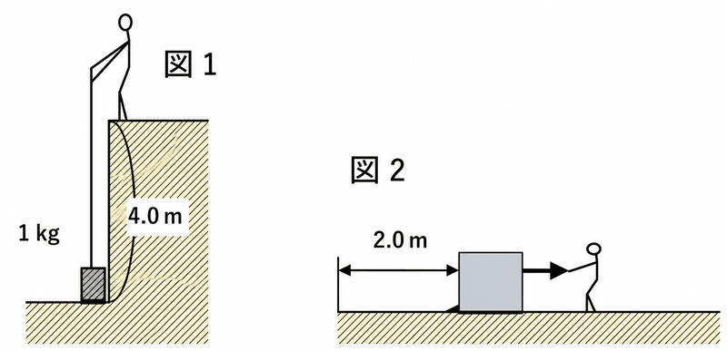
Q1. 図1で、人が1kgの物体を4mの高さまで引き上げた。この人がした仕事は何Jか。
正解：ウ：40J 1kg＝10N。仕事＝10N×4m＝40J です。
Q2. 図2で、人が50Nの力で物体を2.0m引っ張った。この人がした仕事は何Jか。
正解：イ：100J 仕事＝50N×2.0m＝100J です。
Q3. 図2で、物体を一定の速さで引いたとき、物体と床の間にはたらく摩擦力は何Nか。
正解：エ：50N 一定の速さで動くとき、引く力と摩擦力はつり合っています。引く力が50Nなので、摩擦力も50Nです。
例題1 ①〜⑤の場合の仕事
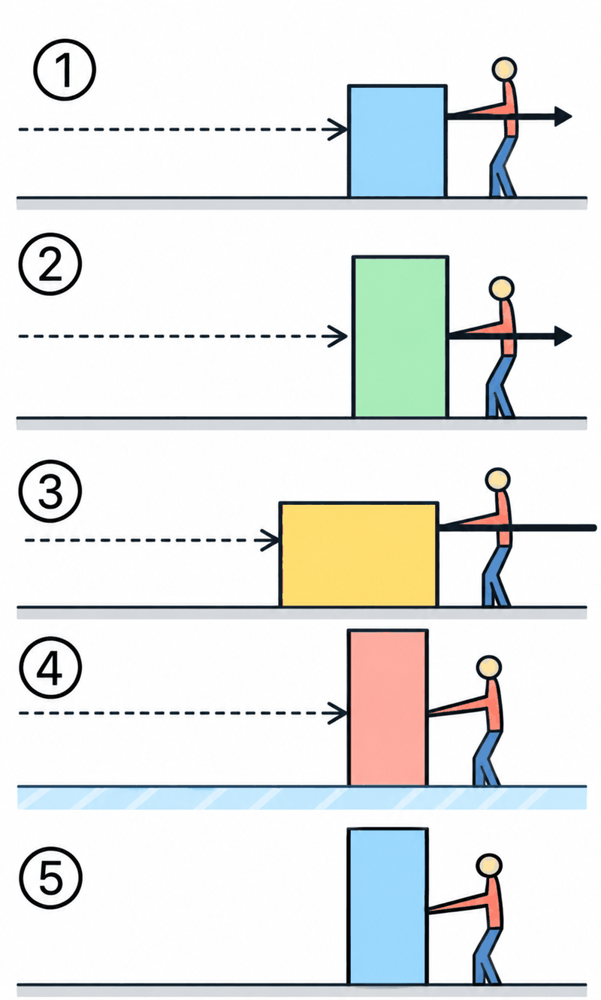
Q4. ①20Nで4m、②30Nで2.5m、③60Nで150cm動かした。④は氷の上（摩擦なし）で物体を引いて5m動かした。⑤は10Nで引っ張ったが動かなかった。①〜⑤のうち、人の仕事が0Jであるものはどれか。
正解：ア：④と⑤ ④は摩擦がなく動かし続ける力がいらないので0J、⑤は動いた距離が0mなので0Jです。
Q5. ①〜⑤のうち、もっとも大きな仕事をしたのはどれか。
正解：イ：③ ①20N×4m＝80J、②30N×2.5m＝75J、③60N×1.5m＝90J（150cm＝1.5m）。③が最大です。
Q6. ③の仕事の大きさは何Jか。
正解：エ：90J 60N×1.5m＝90J です。150cmをmに直すのを忘れないようにしましょう。
Q7. ③のとき、物体を一定の速さで引いたとすると、物体にはたらく摩擦力は何Nか。
正解：ウ：60N 一定の速さで動くとき、引く力と摩擦力は同じ大きさです。引く力が60Nなので、摩擦力は60Nです。
練習1 図A〜C
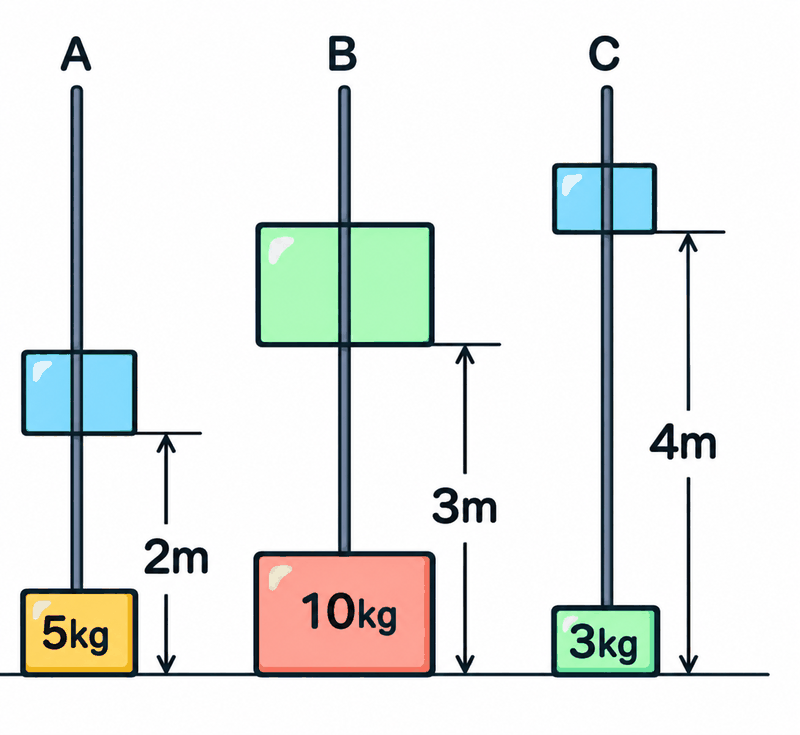
Q8. Aのように、5kgの物体を引き上げるのに必要な力は何Nか。
正解：ア：50N 5kg＝5000g。100gで1Nなので、5000÷100＝50N です。
Q9. Aのときの仕事は何Jか（5kgを2m）。
正解：ウ：100J 50N×2m＝100J です。
Q10. Bのときの仕事は何Jか（10kgを3m）。
正解：イ：300J 10kg＝100N。100N×3m＝300J です。
Q11. A〜Cのうち、仕事がいちばん大きいのはどれか（Cは3kgを4m）。
正解：エ：B A：100J、B：300J、C：30N×4m＝120J。Bがいちばん大きいです。
Q12. 次のア〜オのうち、仕事をしていないものはどれか。ア：重いカバンを手に持って水平に移動した イ：大きい岩を押したが動かなかった ウ：人を肩車して持ち上げた エ：数学の計算問題をした オ：氷の上（摩擦のない面）で物体を動かした
正解：ア：ア、イ、エ、オ ウだけが、力の向きに物体（人）が動いているので仕事をしています。ア・イ・エ・オは仕事が0Jです。
練習2 ばねばかりで木片を引く
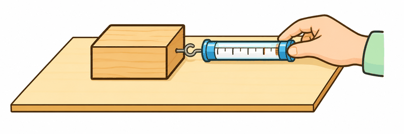
Q13. 床の上の800gの木片を、ばねばかりを使って30cm動かした。ばねばかりは400gを示した。人の引く力は何Nか。
正解：イ：4N 400g＝4N（100gで1N）です。
Q14. このとき、木片と床の間にはたらく摩擦力は何Nか。
正解：エ：4N 木片を一定の速さで引くとき、引く力と摩擦力は同じ大きさです。800g（8N）は木片の重さで、摩擦力ではありません。
Q15. 人がした仕事は何Jか。
正解：ウ：1.2J 30cm＝0.3m。4N×0.3m＝1.2J です。
Q16. 同じことを、摩擦のない氷の上でしたら、仕事は何Jになるか。
正解：ア：0J 摩擦がなければ、動かし続けるのに力はいりません。力が0Nなので仕事は0Jです。
練習3 ばねののびと力のグラフ
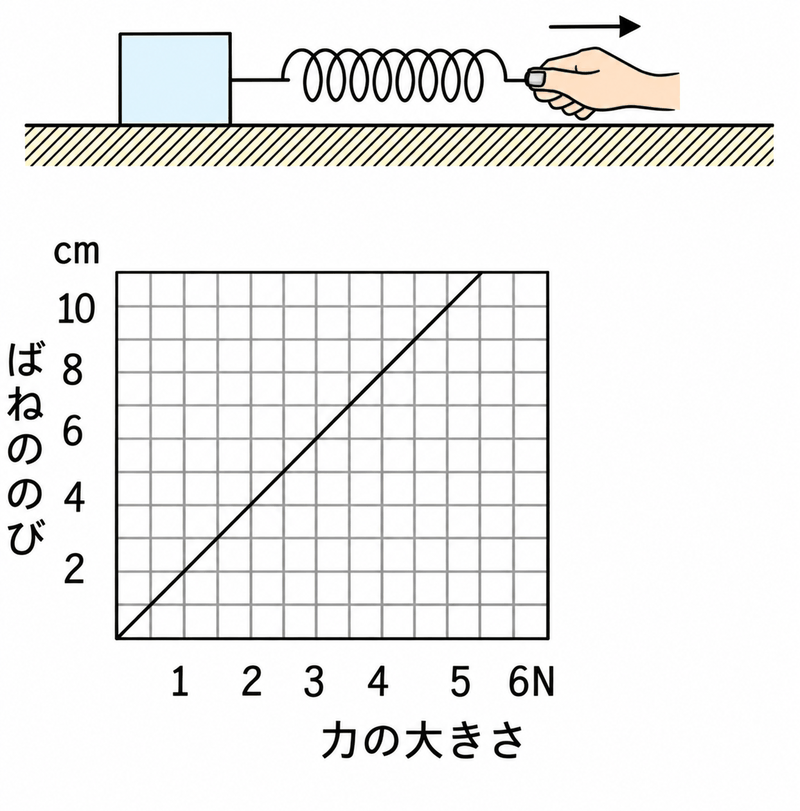
Q17. 800gの木片を、ばねばかりを使って一様な速さで30cm引いた。ばねののびは14cmであった。グラフより、ばねは2cmのびると1Nの力がかかる。木片と床の間にはたらく摩擦力は何Nか。
正解：ウ：7N 2cm：1N＝14cm：xN より、x＝7N です。
Q18. 摩擦力の向きは、木片が動く向きに対してどうなっているか。
正解：イ：反対の向き 摩擦力は、物体の動きをさまたげる向き、つまり動く向きと反対にはたらきます。
Q19. 木片を30cm動かす仕事は何Jか。
正解：エ：2.1J 30cm＝0.3m。7N×0.3m＝2.1J です。
練習4 質量500gの物体を引く

Q20. 質量500gの物体を水平な台の上で一定の速さで引いたところ、ばねばかりは2.5Nを示した。台と物体の間の摩擦力は何Nか。
正解：ア：2.5N 一定の速さなので、引く力と摩擦力はつり合っています。摩擦力は2.5Nです。
Q21. 30cm動かしたときの仕事は何Jか。
正解：イ：0.75J 30cm＝0.3m。2.5N×0.3m＝0.75J です。
Q22. 仕事が2Jになるのは、この物体を何cm引いたときか。
正解：エ：80cm 2J＝2.5N×xm より、x＝2÷2.5＝0.8m＝80cm です。
2
滑車を使った仕事
📖 江原予備校テキスト 例題2・3、練習2・3より
正解 0 / 19 問
例題2 図1〜図3（ひもや滑車の重さは考えない）
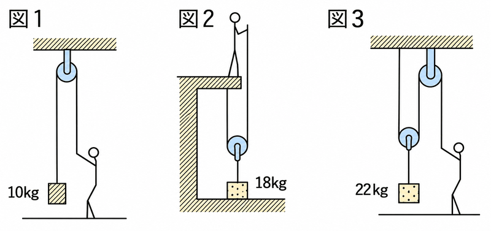
Q1. 図1は、10kgの物体を2.0m引き上げた。人がひもを引く力は何Nか。
正解：ウ：100N 10kg＝100N。定滑車は力が変わらないので、100Nです。
Q2. 図1で、人がした仕事は何Jか。
正解：ア：200J 100N×2.0m＝200J です。
Q3. 図2は、18kgの物体を1.5m引き上げた。人がひもを引く力は何Nか。
正解：ウ：90N 18kg＝180N。動滑車1個で半分の90Nです。
Q4. 図2で、物体を1.5m引き上げるとき、人は何mひもを引かなければならないか。
正解：イ：3m 動滑車を使うと、ひもを引く距離は2倍。1.5m×2＝3m です。
Q5. 図2で、人がした仕事は何Jか。
正解：エ：270J 90N×3m＝270J です。
Q6. 図3は、22kgの物体を1.0m引き上げた。人がひもを引く力は何Nか。
正解：ア：110N 22kg＝220N。動滑車1個で半分の110Nです。
Q7. 図3で、物体を1.0m引き上げるとき、ひもを何m引くか。
正解：イ：2m 1.0m×2＝2m です。
Q8. 図3で、人がした仕事は何Jか。
正解：エ：220J 110N×2m＝220J です。
練習2 ①②③（ひもや滑車の重さは考えない）
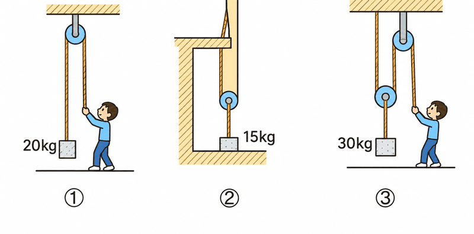
Q9. ①20kg、②15kg、③30kgの物体を滑車で引き上げる。①の人の引く力は何Nか。
正解：ウ：200N 20kg＝200N。①は定滑車なので、200Nです。
Q10. ②の人の引く力は何Nか。
正解：ア：75N 15kg＝150N。②は動滑車が1個なので半分の75Nです。
Q11. ③の人の引く力は何Nか。
正解：ウ：150N 30kg＝300N。③は動滑車が1個なので半分の150Nです。
Q12. ①②③とも物体を地面から2m引き上げるとき、②のひもを引く長さは何mか。
正解：イ：4m ②は動滑車があるので、ひもを引く距離は2倍。2m×2＝4m です。
Q13. 2mの高さに上げるとき、人がした仕事がもっとも大きいのは①②③のどれか。
正解：エ：③ ①200N×2m＝400J、②75N×4m＝300J、③150N×4m＝600J。③が最大です（持ち上げる物体の重さが一番重いため）。
例題3 動滑車2個（ひもや滑車の重さは考えない）
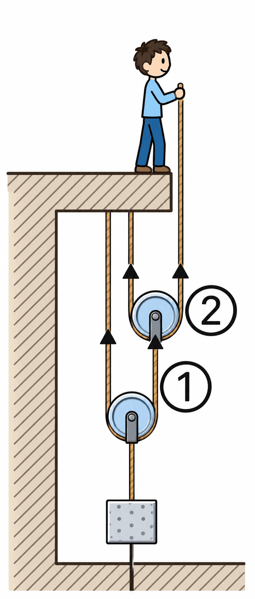
Q14. 80kgの物体を、動滑車2個を使って持ち上げた。人の引く力は何Nか。
正解：ア：200N 80kg＝800N。①のひもは半分の400N、②のひもはさらに半分の200Nです。
Q15. 物体を1m引き上げるのに、人は何mひもを引かなければならないか。
正解：イ：4m ①で2倍の2m、②でさらに2倍の4m です。
Q16. 物体を1m持ち上げたときの人の仕事は何Jか。
正解：エ：800J 200N×4m＝800J です。
練習3 動滑車2個＋定滑車1個
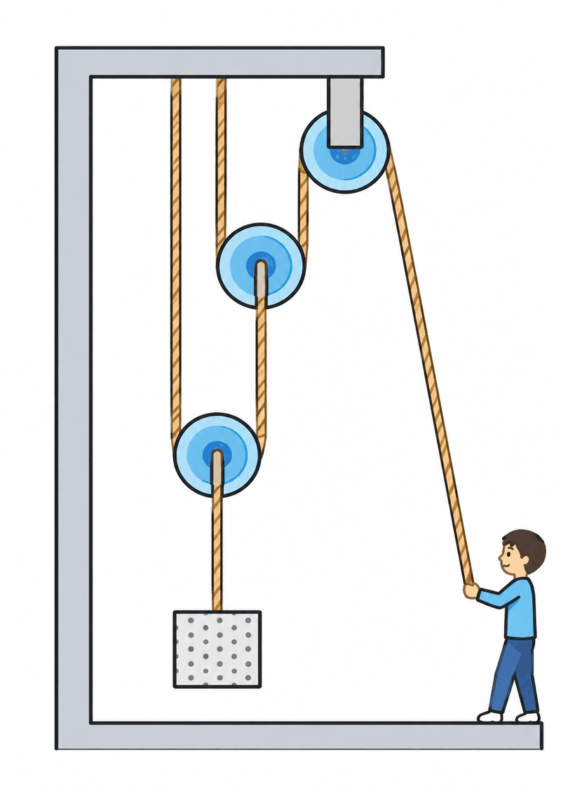
Q17. 60kgの物体を、動滑車2個と定滑車1個を使って、地上から2mまで持ち上げる。人の引く力は何Nか。
正解：ウ：150N 60kg＝600N。600÷2÷2＝150N です（定滑車は力を変えません）。
Q18. 物体を2m上げるには、ひもを何m引けばよいか。
正解：ア：8m 2m×2×2＝8m です。
Q19. 人がした仕事は何Jか。
正解：ウ：1200J 150N×8m＝1200J です。
3
仕事の原理（滑車・てこ・斜面）
📖 江原予備校テキスト 例題3〜4、練習4〜5より
正解 0 / 15 問
例題3 5kgの物体を2m引き上げる
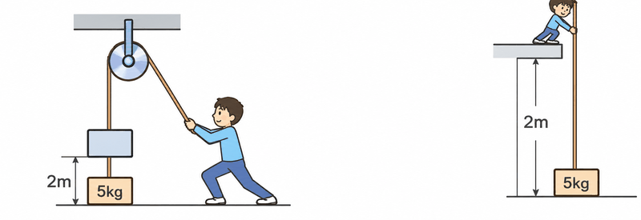
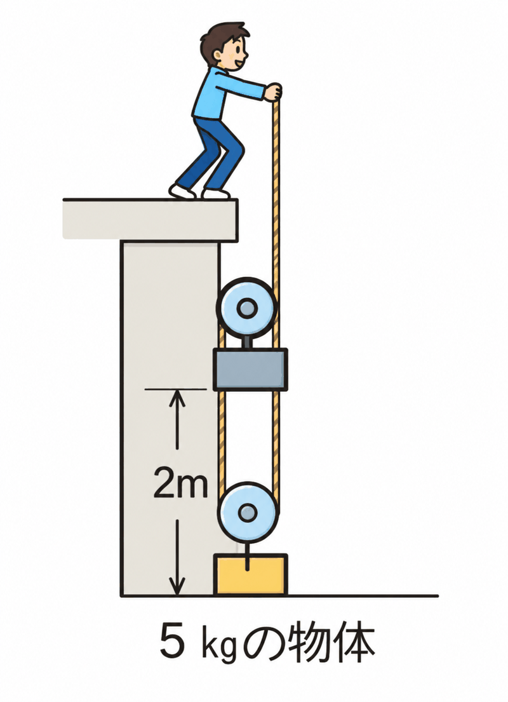
Q1. ①5kgの物体を、定滑車を使って2m引き上げた。人の仕事は何Jか。
正解：イ：100J 5kg＝50N。50N×2m＝100J です。
Q2. ③5kgの物体を、動滑車を使って2m引き上げる。ひもを引く力は何Nか。
正解：エ：25N 5kg＝50Nの半分で25Nです。
Q3. ③で、ひもを何m引く必要があるか。
正解：ア：4m 動滑車を使うので、ひもを引く距離は2倍の4mです。
Q4. ③で、人がした仕事は何Jか。
正解：イ：100J 25N×4m＝100J です。①②と同じ仕事になります。
Q5. このように、様々な器具を使っても仕事の量は変わらない。これを何というか。
正解：エ：仕事の原理 道具を使っても仕事の大きさが変わらないことを「仕事の原理」といいます。
練習5 斜面を使った仕事
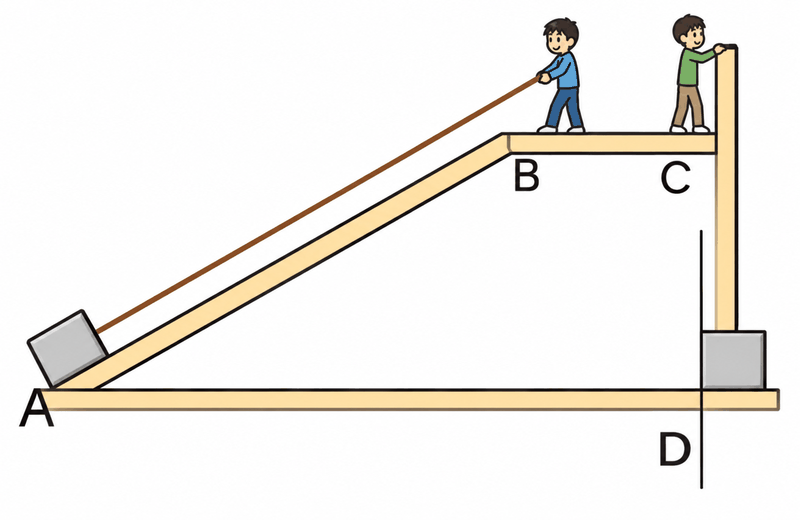
Q6. AB間は6m、CD間は3mである。20Nの物体を、DからCまで直接持ち上げたときの仕事は何Jか。
正解：ウ：60J 20N×3m＝60J です。
Q7. 斜面ABにそって物体を引き上げる仕事は、直接持ち上げる仕事と等しい。この原理を何というか。
正解：ア：仕事の原理 道具を使っても仕事の量が変わらないことを「仕事の原理」といいます。
Q8. 斜面ABにそって引くときの力は何Nか（ひもの重さと摩擦は考えない）。
正解：ウ：10N 斜面を引く力をxNとすると、x×6m＝60J。x＝10N です。
例題4 てこを使った仕事
Q9. PQ＝50cm、QR＝100cmのてこで、人がRを25Nの力でおして物体を動かす。物体の重さは何Nか。
正解：イ：50N xN×0.5m＝25N×1.0m より、x＝50N です。
Q10. 物体を10cm上げるとき、人は何cmてこを押すことになるか。
正解：エ：20cm PQ：QR＝50：100＝1：2なので、10cm×2＝20cm です。
Q11. 人がした仕事は何Jか（25Nで0.2m）。
正解：ア：5J 25N×0.2m＝5J です。
Q12. この50Nの物体を手にもって10cm上げたときの仕事は何Jか。
正解：イ：5J 50N×0.1m＝5J です。てこを使った仕事と同じになります。
練習4 てこを使って15kgの物体を10cm持ち上げる
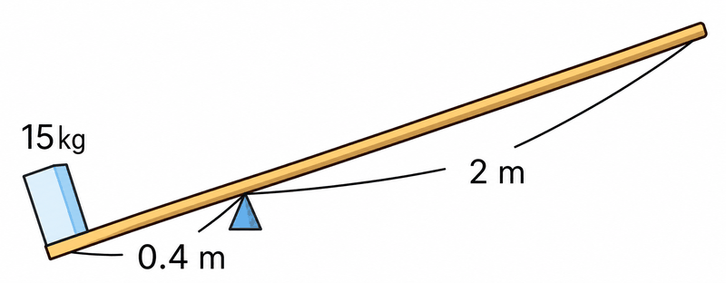
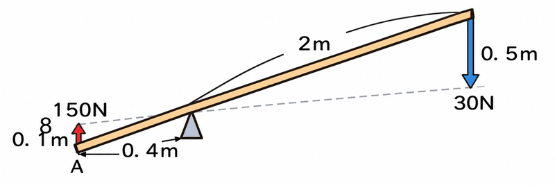
Q13. 短いほうの腕が0.4m、長いほうの腕が2mのてこで、15kgの物体を持ち上げる。何N以上の力で腕をおせばよいか。
正解：エ：30N 15kg＝150N。150N×0.4m＝xN×2m より、x＝30N です。
Q14. 10cm持ち上げたとき、手がした仕事は何Jか。
正解：ウ：15J 腕の長さの比は1：5なので、手は0.1m×5＝0.5m動きます。30N×0.5m＝15J です。
Q15. この物体を手でかかえて10cm持ち上げたときの仕事は何Jか。
正解：ア：15J 150N×0.1m＝15J です。
4
仕事率
📖 江原予備校テキスト 例題5より
正解 0 / 5 問
例題5 AモーターとBモーター
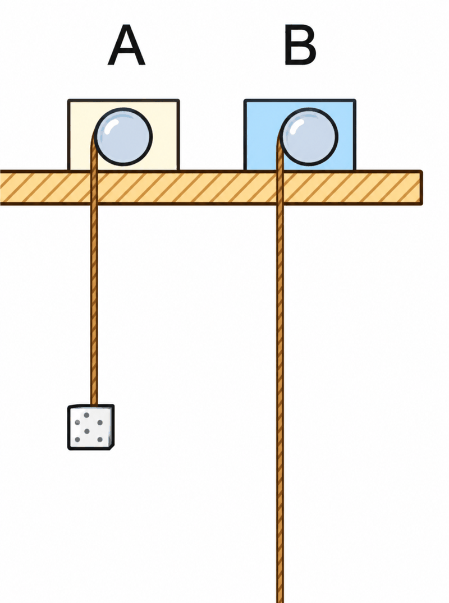
Q1. Aは1kgの物体を2m引き上げるのに5秒かかった。Aのモーターがした仕事は何Jか。
正解：ウ：20J 1kg＝10N。10N×2m＝20J です。
Q2. Bは2kgの物体を3m引き上げるのに12秒かかった。Bのモーターがした仕事は何Jか。
正解：イ：60J 2kg＝20N。20N×3m＝60J です。
Q3. Aの仕事率は何Wか。
正解：エ：4W 20J÷5s＝4W です。
Q4. Bの仕事率は何Wか。
正解：ア：5W 60J÷12s＝5W です。
Q5. A、Bのうち、パワー（仕事率）が大きいのはどちらか。
正解：イ：B Aは4W、Bは5Wなので、Bのほうが仕事率が大きいです。